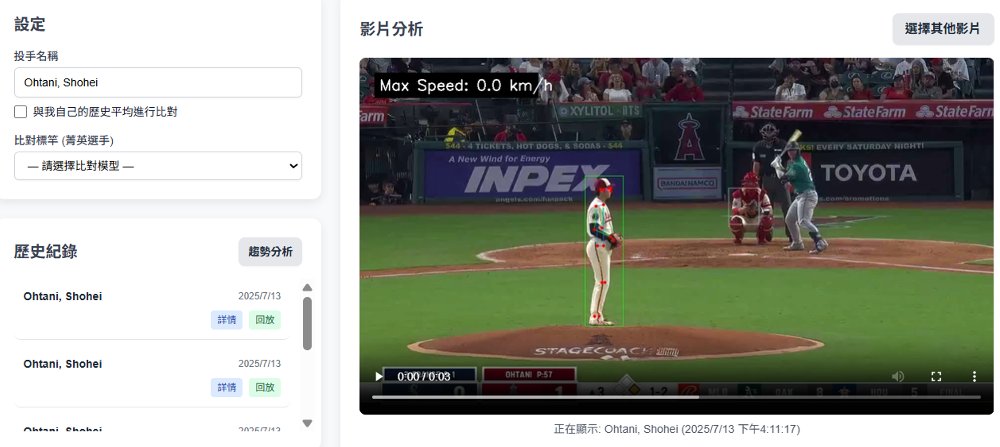

專案名稱：棒球投手分析儀表板
專案簡介
該專案是基於 FastAPI 的後端系統建立一個棒球網站，用於接收用戶上傳的投手影片，並協調多個雲端微服務（如骨架點偵測、棒球軌跡分析、運動學特徵提取、分類與評分）來處理影片，最終將分析結果回傳給前端網站呈現。
功能特色
- 資料視覺化：將後端的資料轉換成各種視覺化的圖表。
- 歷史紀錄的保存與查詢：將後端資料儲存於全域變數中，可在前端網站中調閱。
- 關鍵幀針對觀察：將投球影片進行分析後，回傳影像中的出手幀、踏步幀、最大肩外旋幀的三個影像畫面。
- 圖表互動即時化：使用者可以選擇不同的分析項目，即時呈現比較數據的圖表。
詳細說明
-
影片處理與歷史紀錄
1. 使用者輸入投手名字與點選要分析的影片後按下確定，觸發JavaScript(jQuery)的change事件
2. 使用 fetch 函式，以 POST 的方式將影片檔案與投手名稱非同步地傳送到API 地址(後端)
3. 經過後端處理分析過後的資料以json的格式，連同之前存入後端資料庫的歷史紀錄一起回傳
 -
資料影像化
回傳的資料會以下列的方式呈現:
骨架影片與出手幀、踏步幀、最大肩外旋幀的三個影像畫面
模型預測總覽(最大球速、動作品質分數、好球機率預測):Tailwind CSS呈現
生物力學深度診斷:與先前該投手球種的六大項目的比較圖，其中子彈圖與密度圖是以CSS的方式模擬呈現
進階歷史數據分析模態窗:採用chart.js的方式呈現，讓使用者可以選擇不同的分析項目，即時呈現比較數據的圖表
在這次的團體專案中，我主要負責前端網站的開發。運用生成式 AI ，快速搭建了基於 Tailwind CSS 的使用者介面，並使用 JavaScript 和 jQuery 處理所有的前端邏輯。
使用的技術
前端：HTML, JavaScript, Tailwind CSS, Chart.js, jQuery
後端串接：Fetch API (與 FastAPI 進行數據交換)
核心概念：API 整合, 資料視覺化, 非同步請求